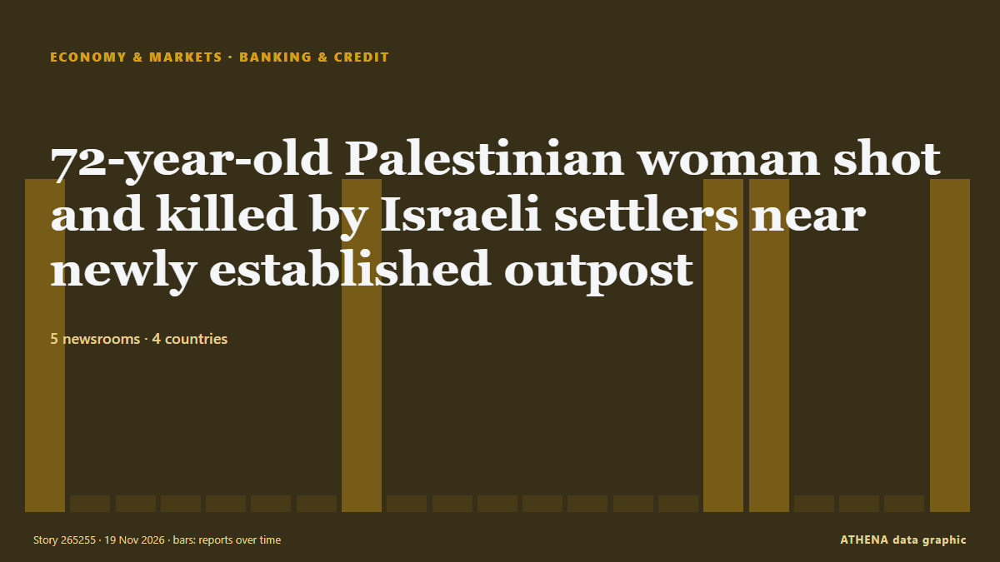

Banking & credit
SponsoredPresented by  Cybernetics and Artificial Intelligence Lab Welcome to the Cybernetics and Artificial Intelligence Laboratory, established at the Department of Business Administration of the National and Kapodistrian University of Athens. The lab is headed by Professor Dimitrios Thomakos. The lab aims to do research that can be published in top venues. Our research uses tools and methods of Artificial Intelligence, and lies in the following areas: - Forecasting - Decision making - Cyber security - Finance We are always looking forward to collaborating with exceptional students!
Cybernetics and Artificial Intelligence Lab Welcome to the Cybernetics and Artificial Intelligence Laboratory, established at the Department of Business Administration of the National and Kapodistrian University of Athens. The lab is headed by Professor Dimitrios Thomakos. The lab aims to do research that can be published in top venues. Our research uses tools and methods of Artificial Intelligence, and lies in the following areas: - Forecasting - Decision making - Cyber security - Finance We are always looking forward to collaborating with exceptional students!
| 7 Nov | 1 |
|---|---|
| 8 Nov | 0 |
| 9 Nov | 0 |
| 10 Nov | 0 |
| 11 Nov | 0 |
| 12 Nov | 0 |
| 13 Nov | 0 |
| 14 Nov | 0 |
| 15 Nov | 0 |
| 16 Nov | 6 |
| 17 Nov | 9 |
| 18 Nov | 6 |
| 19 Nov | 2 |
| 20 Nov | 0 |

72-year-old Palestinian woman shot and killed by Israeli settlers near newly established outpost
Jerusalem — A 72-year-old Palestinian woman was shot and killed by Israeli settlers in front of her home in the occupied West Bank on Tuesday, according to Palestinian officials and eyewitnesses. from Egypt Independent
US DOE grants $2.8bn conditional loan for Wyoming grid project
The US DOE Office of Energy Dominance Financing has announced up to $2.8bn conditional loan commitment for the Wyoming Intertie project. from Energy Monitor
EU proposes 45-billion-euro Ukraine loan for 2027
The loan would cover most of Ukraine's €70 billion funding gap, with EU leaders set to discuss the proposal at a summit next week. from CNA (Channel NewsAsia)
Sindh starts online domicile, residence certificate service for Karachiites
KARACHI: The Sindh government on Tuesday launched an online service for domicile certificates and Permanent Residence Certificates (PRC) in the city, allowing applicants to complete the entire… from Dawn
Bombay High Court quashes ICICI Bank’s nod to prosecute ex-CEO Chanda Kochhar in ‘loan fraud’ case
Mumbai: The Bombay High Court on Wednesday quashed ICICI Bank’s sanction to prosecute its former CEO Chanda Kochhar in a case involving alleged irregularities in loans provided to the Venugopal… from Deccan Herald
Parliament Approves Probe into NPLs With 137 Votes
A 29-member committee will examine the handling of private debt and nonperforming loans across successive governments, with its work set to last three months. from To Vima (English)
Deutsche Bank leak points to Russian laundering in Hungary
Millions of leaked documents revealed questionable practices at the German bank and links between several companies and Russian oligarch Oleg Deripaska. from Free Malaysia Today
European Commission proposes up to $49B in new loan package for Ukraine in 2027
Package would provide up to $27B in military aid, $22B in budget support, cover roughly two-thirds of Ukraine’s additional financing needs. from Anadolu Agency (English)
West Bank’s displaced Palestinians hold little hope for post-Netanyahu era
Palestinians fear Israel’s policies towards them will remain unchanged even if former general Gadi Eisenkot replaces Benjamin Netanyahu as leader. from Free Malaysia Today
EU proposes new €45bn Ukraine loan for 2027
New cash is ‘best way to give Ukraine a strong hand at the negotiation table' from Euractiv
Deutsche Bank flagged $582m in suspicious Epstein-linked transactions, leaked files reveal
The investigation, titled Inside Deutsche Bank, examined more than 15 million leaked files, including internal emails, compliance reports and financial records, reports Forbes. from The Business Standard (Bangladesh) (working feed)
US Seeks $502,000 From Bank Account of Kosta Diamantis
US prosecutors are seeking to seize $502,100 from a bank account belonging to former Connecticut official Kosta Diamantis, who fled to Greece before being sentenced to seven years in prison for… from Greek City Times
Mwanza youth begin harvesting fish under BBT programme
MWANZA: Young fish farmers in Nyegezi, Mwanza, have begun harvesting fish following seven months of implementation of the Building a Better Tomorrow (BBT) Fisheries Programme. from Daily News
'We can turn innovation into opportunity': Lloyds Banking Group and University of Leeds launch strategic partnership
Lloyds Banking Group and the University of Leeds have launched a partnership designed to turn research and innovation into commercial opportunities in Yorkshire. from Yorkshire Post
Palestinian woman, 72, shot dead by Israeli settlers in West Bank, health ministry says
Palestinians say there was an attack by settlers in al-Duyuk al-Tahta, while the Israeli military says the settlers fired after being attacked. from BBC News
Israeli minister seeks to strip activist Andrey X of citizenship
Russia-born Andrey Karzhanovsky has come under fire from Israeli officials over his documentation of Israel's occupation and settler attacks in the West Bank. from The New Arab
Paraguay's ousted president moved to prison after luxury cell exposé
Former Paraguayan President Santiago Peña was moved to a military prison after reports revealed privileged detention conditions, officials said. from UPI World News
President of Uzbekistan concludes visit to Oman
Muscat: President Shavkat Mirziyoyev of the Republic of Uzbekistan, and his accompanying delegation left the country today following a two-day state visit to the Sultanate of Oman.... from Oman Observer
New Zealand Central Bank Warns of Rising Global Risks, Private Credit Exposure
New Zealand’s central bank warned on Tuesday that global financial stability risks continue to rise, with growing vulnerabilities in the non-bank lending sector driven by increased private credit… from Insurance Journal